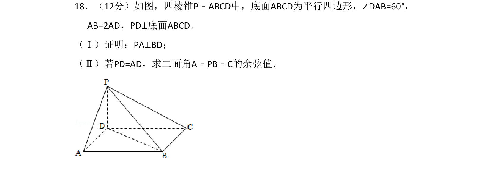
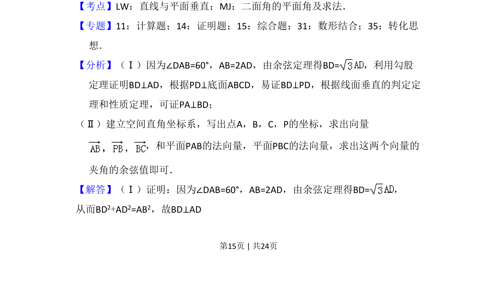
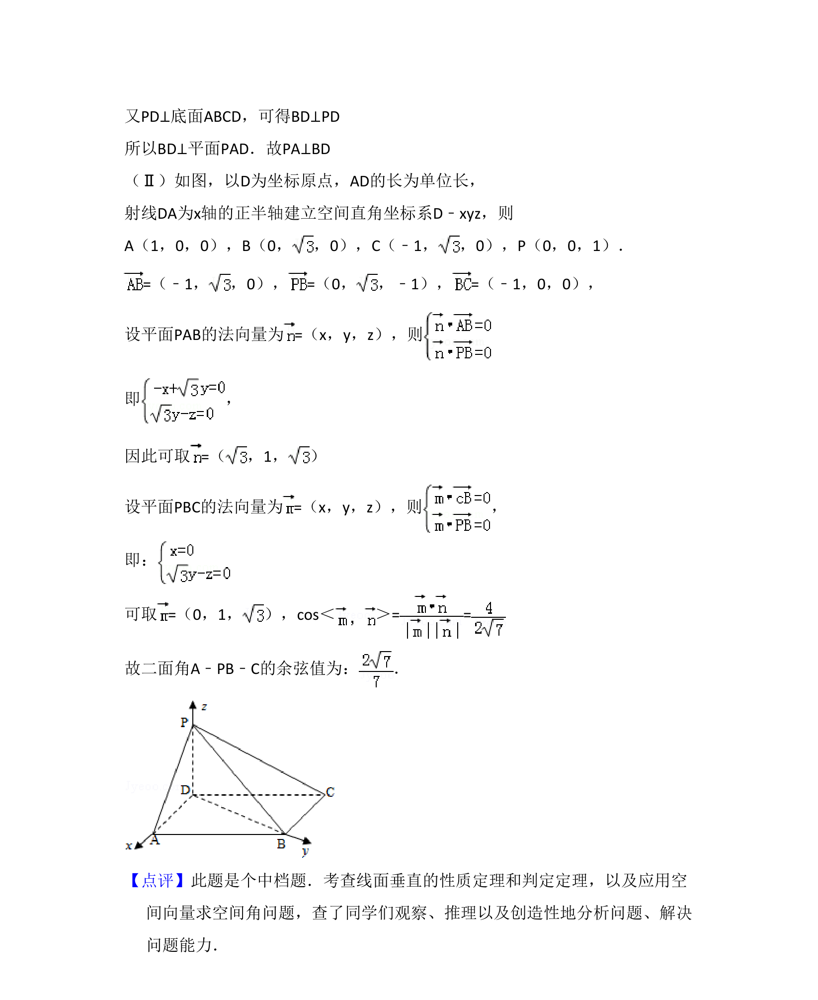

考点：直线与平面垂直 二面角的平面角及求法

四棱锥中证明线线垂直并求二面角余弦值，涉及线面垂直判定与空间向量法。


📄 原 PDF 第 15 页：
素材/真题/吉林/2008-2024·（吉林）数学高考真题/2011年高考数学试卷（理）（新课标）（解析卷）.pdf
18．（12分）如图，四棱锥P﹣ABCD中，底面ABCD为平行四边形，∠DAB=60°， AB=2AD，PD⊥底面ABCD． （Ⅰ）证明：PA⊥BD； （Ⅱ）若PD=AD，求二面角A﹣PB﹣C的余弦值．
【考点】LW：直线与平面垂直；MJ：二面角的平面角及求法．菁优网版权所有 【专题】11：计算题；14：证明题；15：综合题；31：数形结合；35：转化思 想． 【分析】（Ⅰ）因为∠DAB=60°，AB=2AD，由余弦定理得BD=，利用勾股 定理证明BD⊥AD，根据PD⊥底面ABCD，易证BD⊥PD，根据线面垂直的判定定 理和性质定理，可证PA⊥BD； （Ⅱ）建立空间直角坐标系，写出点A，B，C，P的坐标，求出向量 ，和平面PAB的法向量，平面PBC的法向量，求出这两个向量的 夹角的余弦值即可． 【解答】（Ⅰ）证明：因为∠DAB=60°，AB=2AD，由余弦定理得BD=， 从而BD2+AD2=AB2，故BD⊥AD